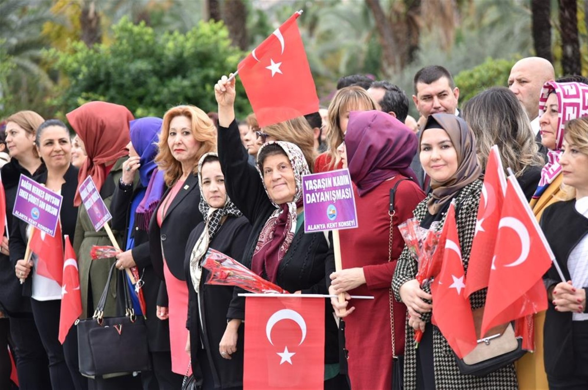
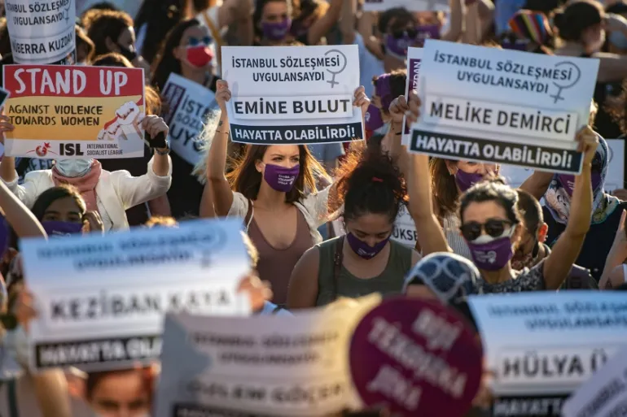
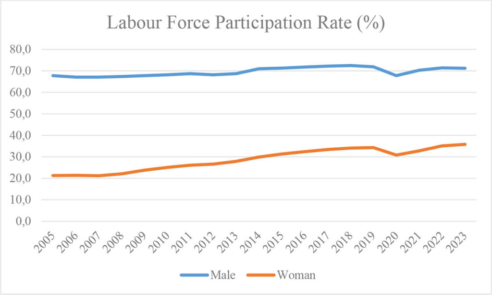

Women reported domestic violence in Turkey in 2023 alone (Turkish govt. data)
Female labor force participation rate, vs. 71.2% for men (TurkStat, 2023)
Turkey's rank out of 146 countries in WEF's 2024 Gender Gap Index
Women reported domestic violence between 2013–2024 (govt. data)
Women’s rights in Turkey faces several ongoing challenges, even though there are laws meant to protect women. One major issue is violence against women. This includes domestic abuse and femicide, where women are killed, often by current or former partners. Many of these cases are not reported, and even when they are, the legal system does not always fully prosecute offenders. This makes it harder for victims to get justice and can allow the problem to continue. A key example is when Turkey withdrew from the Istanbul Convention in 2021. This international agreement was designed to prevent violence against women and support victims, so leaving it raised concerns that protections could weaken.


Women in Turkey participate less in the workforce than men, and they are less likely to hold leadership positions. Many women also face a gender pay gap, meaning they earn less than men for similar work. Traditional gender roles play a role in this, as women are often expected to focus on family responsibilities rather than careers. Social and cultural factors can further limit opportunities. In some areas, especially rural regions, girls may have less access to education than boys. Early marriage still occurs in certain communities, which can prevent girls from continuing their education or pursuing careers.